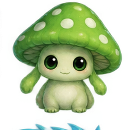

1 · Entdecken
Zehn unbekannte Tierwesen wurden anhand von drei Merkmalen untersucht. Betrachte die Daten in verschiedenen Kombinationen und finde sinnvolle Gruppen.
Datenansicht
Gruppierung
Teile die Wesen in zwei Gruppen.Ziehe alle Wesen in Gruppe A oder Gruppe B.
Finde eine weitere Möglichkeit, die Wesen zu unterteilen.Ziehe alle Wesen in Gruppe C oder Gruppe D.
Spoiler: Weise zuerst alle Wesen in beiden Gruppierungen zu, um die nächste Aufgabe freizuschalten.
Eine Programmiererin gibt den gefundenen Gruppen nun Bedeutungen:
Hefteraufgabe
Entscheide, welche Charakteristiken das neue Wesen besitzt. Ordne es dazu jeweils einer Gruppe (A/B und C/D) zu und begründe deine Entscheidung schriftlich.
2 · Clustering
Wie aus Ähnlichkeiten Gruppen entstehen.
Beim Clustering werden Daten nach Ähnlichkeiten geordnet. Dafür vergleicht ein Algorithmus die Merkmale der einzelnen Objekte. Objekte mit ähnlichen Merkmalswerten werden zu einem Cluster zusammengefasst.
Welche Cluster entstehen, hängt davon ab, welche Merkmale betrachtet werden.
Menschen stellen sich Cluster häufig als Gruppen von Punkten vor, die nah beieinander liegen. Erläutere, warum diese Vorstellung bei Clustern mit vier oder mehr Merkmalen nur schwer umsetzbar ist und wie du stattdessen vorgehen würdest.
HefterDrei Merkmale gleichzeitig
Im dreidimensionalen Raum kann jedes Wesen über drei Merkmale positioniert werden. Die Darstellung dreht sich, damit die räumlichen Abstände besser erkennbar werden.
Bei der automatischen Einteilung von Daten können Probleme auftreten. Erläutere an einem Beispiel, wodurch eine Gruppierung irreführend sein könnte.
3 · Sicherung
Die wichtigsten Aussagen aus dem Lernweg.
AbschriftUnüberwachtes Lernen ist eine Form des maschinellen Lernens, bei der keine richtigen Ausgaben oder Kategorien vorgegeben werden. Die KI untersucht die Merkmale der Daten selbstständig und sucht darin nach Mustern und Strukturen.
Clustering ist eine Möglichkeit des unüberwachten Lernens: Ähnliche Daten werden zu Gruppen zusammengefasst.
Reflexion